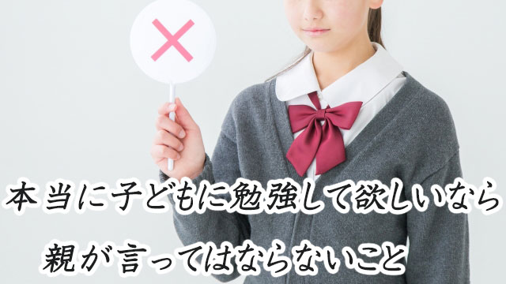
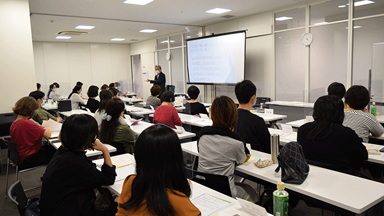

セミナーなどで私は次のような質問を親の皆さんにすることがあります。
皆さん学生時代勉強が好きでしたか？
シーンとして手が挙がらない(笑)
今もう一度学生時代に戻って勉強したいですか？
やはり手が挙がらない
子どもの頃親から勉強しなさいと言われた人は？
ほとんどの人が手を挙げる
そこで私はこんなことを言う。
つまり皆さんは学生時代勉強が好きでもなく親から勉強しなさいと言われ仕方なくやっていた。それならなぜ今我が子に同じことを言うのでしょう？
大抵はバツ悪そうに苦笑いを浮かべる。
意地悪なやり方だが「ウチの子勉強しないんです。どうしましょう」と言う親には「じゃ、あなたは子どもの頃進んで勉強するタイプでしたか」と問い返すことがある。
ここで気づいて欲しいのは、親が子に「勉強しなさい」と言うことが親にとっての義務になっているということ。
子どもに勉強を強要することが親の努めと思い込んでいるということだ。
私は40年以上「先生業」をやっているが、40年前の親も30年前の親も20年前の親も、そして今の親も子どもに「勉強しなさい」と言っているのを目撃してきた。
日本の学校教育システムは150年の歴史がある。多くの人が学歴を出世の手段と考えるようになったのは、日本で産業革命が起こった1910～1920年頃だと考えると少なくとも100年間親は子どもに延々と「勉強しなさい。じゃないと将来困る（出世しない）わよ」と言い続けてきたことになる。
まずここに気づいて欲しい。
親であるあなたが我が子に「勉強しなさい」と言うことは、あなたが本当に勉強の大切さを伝えたくて言っているのではなく、あなたの親、そのまた親から代々受け継がれてきた「親の常套句」を口ずさんでいるに過ぎないということ。呪文のようなものだということに気づいて欲しい。
そしてこの呪文が効果的でないことはあなた自身がいちばん知っているということ。
「勉強しなさい」は勉強ギライの子をつくる
「勉強しなさい」がなぜ効果がないのか、まず解りやすいところで言うと、勉強に限らず仕事でも何でも上からガミガミ強制されると人はますますヤル気を失うという事実がある。
これはすぐに分かるだろう。
原則として人が真剣に何かを始めるときは自分の意思で「そうする」と決めたときだ。必要に迫られたときや内側からわき起こる「やるぞ」という意思が発動して人は動き出す。これを内発的動機づけという。
他方強制されたりアメとムチの条件によって「やらされる」状態を外発的動機づけと呼ぶ。
外発動機が一時的効果しかなく、持続性があり人が何らかの成果をあげるのは内発的に動機づけられたときであるというのは多くの心理学的実験でも証明されてきた。
だがもっと恐ろしいことがある。
親があまりにも「勉強しなさい」と言うと子どもは勉強しなくなるだけでなく勉強そのものを嫌うようになり大人になっても仕事上必要な学びもやらなくなる傾向があるということ。
一種の心理的トラウマ体験と言えるかも知れない。
仮に親や先生にうるさく言われ仕方なく勉強したとしても形だけ「やってる振り」をする形式主義で受け身なタイプになる。
こういう人は有名大学を出たとしても学ぶ意欲に乏しく、指示されたことしかやろうとしない「お荷物タイプ」になりやすい。私もこういう人をよく見てきた。
なので親は口先だけで「勉強しなさい」と安易に言うのではなく、まず「学ぶことの大切さ」を自分の言葉で伝えられなければならない。
真に勉強の大切さを感じていないのに、自分の親から言われ続けたセリフ(呪文)を唱えているだけではないか。まるでそう言うのが親の義務であるかのように無自覚に繰り返していないか心の中を点検して欲しいと思う。
「勉強とはつまらないが将来の利益（出世）のために仕方なくやるもの」と心の底で思っているとしたら、まさにその本音こそが子どもに伝わってしまう。
つまり勉強とは嫌々やるものというメッセージだ。
子どもは益々自発的に勉強しなくなるだろう。

10月4日開催 第2回「親学」親と子の課題を分離する
では、親はどうしたらよいのだろう。
答えはシンプルでまず親が姿勢を変えること。親が変われば子も変わる。このシンプルな法則を実践する。
具体的に言おう。以下3つの実践を行う。
１． 親は「勉強しなさい」という呪文をやめる
子どもは学校でも塾でも「勉強しろ」と言われ続けているわけで、家でも同じことを言われるとどうなるか。ますますヤル気を失うことくらいは解るはず。
子どもは勉強しろと言わないとかえってやらなくなるのでは…などと心配する必要はない。それは親の勝手な不安であって子どもの行動をコントロールしたいエゴイスティックな欲求に過ぎない。
もっと子どもを信頼すること。
心配や不安を子どもにぶつけることは「お前を信じていない」という強烈なメッセージを子どもに与えることになり、子どもの自己肯定感を低くしてしまうことを知ろう。
２． 親は自分の夢中になれることを見つける
親自身が自分の興味関心あるもの、それは仕事に関する分野であれ趣味やサークルであれ、あるいは習い事や教養のためのスクール通いであれ、何かを学ぶために熱心に取り組むこと。
何かに夢中に取り組む親の姿こそが子どもにとっても良いお手本となる。
仕事が忙しいという人は、自分のやっている業務に関してどうすれば効率よく進めることができるかアレコレ考えたり、勉強することをお勧めしたい。
会社のためにもなり自分のためになるから一石二鳥となる。
いずれにしても子どもの細かな動向にいろいろ注意が向かわないくらい、自分のやるべきこと夢中に取り組むことを見つけ集中して欲しい。できればその行為を楽しんでやることが望ましい。
何かに夢中になること。情熱を傾ける姿勢。自分を少しでも高め成長しようという姿。それらの姿勢は必ず子どもの自発性に良い影響をもたらす。
少し固い話になるが、心理学者のアドラーは「人間には各々課題があり、互いの課題に介入することはできない」と言った。
学校の勉強や成績は子どもの課題であり、一方中年期の親には人生を充実させ社会に貢献するという課題がある。
アドラーは「課題の分離」が人間関係を円滑にする上で重要と言う。
その観点から言えば、親が自分の「課題」と向き合いもせず子どもの勉強や成績にうるさく口を出すことは、課題の分離が行われていないことになる。親子関係はうまく行かないだろう。
この原則を逆手にとれば、子どもに勉強して欲しければ―課題と向き合って欲しければ―親が自分の課題―仕事や趣味、人生を充実させる勉強―を一生懸命やればよいということになる。
思考力とコミュニケーション力を伸ばす方法
この2つを実践すれば子どもの自発性を保証することになり、少なくとも自らの意思でやるべきことに取り組む姿勢につながるだろう。これだけでも子どもが「言われなくても勉強し始めた」という例は多い。
さてその上で親が心がけるべき3つ目のポイントを話したい。
３、対話によって子どもの知的好奇心を刺激する
これは多くの親にとってハードルが高いかも知れない。
なぜなら日本では学校でも家庭でも、この「対話」形式によって思考を深めていく教育習慣がないからだ。互いの問答によって物事の本質を追究し議論を重ねてより良い解答に至る。そんな欧米流のエリート教育の土壌がない。
だが今の社会やこれからの時代の流れを考えると、すでに決まっている「答え」を覚えるだけの古い学習習慣は通用しない。
今の子どもたちに必要な教育は「覚える」よりも状況に応じて必要な知識や情報を自ら選択する力のほうだ。そして必要とあれば積極的に関連する知識を深め、それに基いて独自のオリジナリティを発揮する主体的人間。そういう人間が高いポジションを与えられ活躍する。
もし親であるあなたが我が子にそんな人間に育って欲しいならば、ぜひ対話による知的好奇心の刺激をお勧めしたい。
といってもソクラテスと弟子の対話のような難しい話をしろと言うのではない。
学校での出来事。社会を騒がしている事件やニュース。身近な問題について「お前はどう思う」という問いかけを意識するだけで十分。
何でもオープンに話題にし、親も意見を言い子どもにも意見を言わせる。
親というのはいつも、子どもより物事を知っているべきだと考えがちだがそんな必要はない。子どもが思春期なら、むしろ子ども扱いせず一個の大人として尊重する姿勢が大事である。
できれば言い放しで終わりにするのではなく、その話題に関する背景や関連する分野にも触れること。それによって思考の幅は広がる。お説教ではなく対等に楽しく話すことがポイントとなる。
本当は幼児のときから、このように「学ぶ楽しさ」「知る喜び」を伝えておくことが理想だが小中学生になってからでも遅くないから家庭の習慣にして欲しい。
2で話した親の「興味関心ある分野」について話題にするのも良いだろう。親の中には仕事のことやプライベートな人間関係を子どもの前で話してはいけないと思っている人もいるが、それは違う。
親にも「悩みや苦しみ」があり、毎日を懸命に生きていることをそれらの話から知り、それはとても良い刺激になる。
なるべくタブーを設けずオープンにするのがよいと思う。
対話することは子どものコミュニケーション能力の発達も促す。日頃の勉強は教科書を読んだりテストのために覚えたりと、どうしてもインプット中心になりがち。
対話することはアウトプットの訓練になる。社会でもっとも大切なコミュニケーション能力を鍛えるためにも、このアウトプット（発信）力を子どものうちに身につけさせたいものだ。
余談だが、いわゆる一流大学を出て社会でも活躍し続ける人には共通点があって、それは子どものとき家庭で活発な対話習慣があったということ。これにはほぼ例外がないようだ。
さて繰り返しになるが対話が大事といっても、親子でテーブルをはさんで深刻な顔で議論するという堅苦しいものではない。
日常のささやかな問題や学校で起こった面白いエピソード、親の失敗談など一家団欒のときに笑いながら話すという軽いレベルで良いのだ。
最後に
以上長々と話してきたが、親が子どもに口先だけで「勉強しろ」と言うのは一種の手抜きであり、かえって意欲をそぐだけで逆効果だというのは十分分かっていただけたと思う。
では最後にもう１つ。番外編として以下のことを付け足したい。
子どもの得意教科好きな分野を褒める
どんな子も実は得意な教科や分野がある。
好きなモノがある。
親はそれを徹底的に褒めまくって欲しい。
褒める目的は２つあって、１つは自己肯定感を高めること。もう１つは熱中する経験を与えることにある。
得意教科をつくってよい成績を取ることはむしろ副産物であって、自らの強みを自覚させることがいちばん肝心だと思う。特定分野で高いスキルをもつことが社会で活躍する鍵となるからだ。
高いスキルを磨くには、やはり得意な分野を早く見つけ熱中して取り組む経験が絶対必要である。なので得意教科をほめまくって子どもの自己肯定感を上げるよう努めて欲しい。
そしてどの親にもやって欲しいこと。
それは子どもを無条件で愛することを忘れないこと。
そうすれば子どもはいかなる運命をも乗り越えていけるだけの力を得るだろう。
無条件の愛で子どもを包むこと。これが何よりまず出発点であることを忘れないでいたいものです。